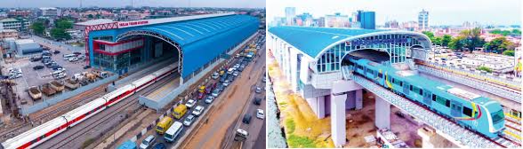
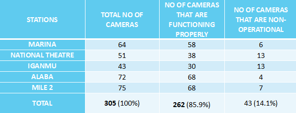
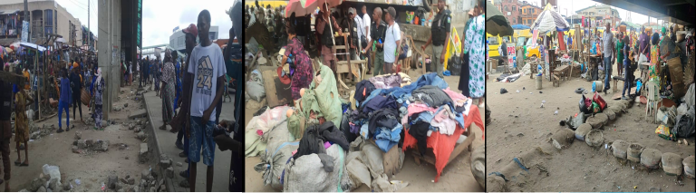
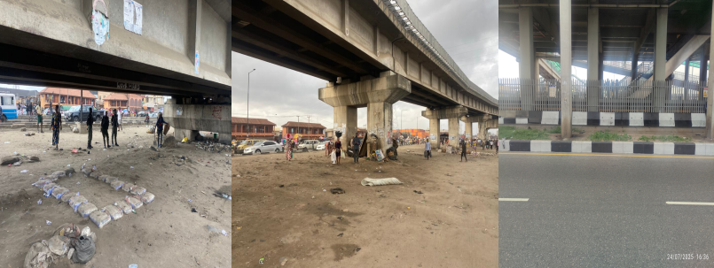

Blue Line :
Stations Covered: Marina, National Theatre, Iganmu, Alaba, Mile 2

In the absence of a maintenance contract, our unit has been carrying out basic maintenance functions, including cleaning cameras and attending to minor technical issues.
Continuous and regular clearing and raiding of the LRMT Blue line corridor were carried out to protect the operations integrity, removing illegal traders and encroachments, and ensuring order around train stations and BRT corridors

